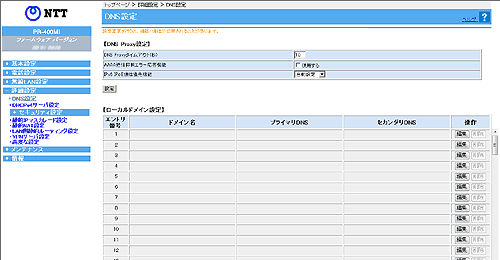

| DNS の設定をします。 |
| ローカルドメインの問合せテーブルの設定をする場合は、下欄の［編集］をクリックすると「エントリ編集」の画面が表示されます。 設定値を選択・入力したあと［設定］をクリックすると設定内容が反映されます。 |
| ※「Web設定」画面に表示されているボタンについての説明は こちら |
|  |
 DNS Proxyタイムアウト（秒）（初期値：10）
DNS Proxyタイムアウト（秒）（初期値：10） |
||
| DNS Proxy タイムアウト（秒）を入力します。入力できる値は、1〜10です。 | ||
| AAAA送信抑制エラー応答機能（初期値：使用しない） |
||
| IPv4 PPPoE側へのAAAA問い合わせが発生した場合に、Proxyせずに送信元端末に空の応答を返答する機能です。本機能を使用する場合はチェックします。 | ||
| IPv6 IPoE通信優先機能（初期値：自動設定） |
||
| LAN側端末から受信したDNSクエリの優先転送先を選択します。 | ||
|
||